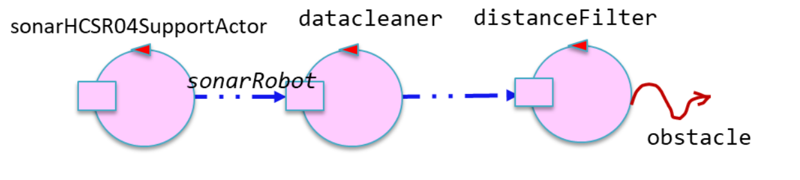

Introduction
Progetto finale di ISS finalizzato allo sviluppo software di un impianto di smistamento dei rifiuti attraverso un robot che preleva il carico del camion e lo porta al container appropriato
Requirements
Work Plan
In questo Sprint ci occuperemo dello sviluppo di Sonar e Led collocati sul RaspberryPI.
Il Sonar verrà usato come un 'alarm device', infatti alla presenza di un ostacolo rilevato dal Sonar, il transportTrolley si fermerà. Il valore entro cui il Sonar rileva l'ostacolo sarà un valore prefissato DLIMIT .
Il Led verrà usato per indicare lo stato del transportTrolley :
Il Sonar verrà usato come un 'alarm device', infatti alla presenza di un ostacolo rilevato dal Sonar, il transportTrolley si fermerà. Il valore entro cui il Sonar rileva l'ostacolo sarà un valore prefissato
Il Led verrà usato per indicare lo stato del transportTrolley :
- LED off quando il transportTrolley è in HOME
- LED blinks quando il transportTrolley è in movimento(pickup,dropout,gotoHome).
(se il robot si trova in HOME ma si sta girando (magari per riposizionarsi dopo aver gestito una depositaction), il Led deve comunque lampeggiare(detto dal committente)). - LED on quando il transportTrolley è fermo/stopped.
Checkpoint Sprint2

Problem analysis
Led
Dall'analisi dei requisiti, si evince che ilSi aprono, quindi, diverse problematiche. In particolare, sarà necessario comprendere:
- Come fa il Led ad accendersi, spegnersi o lampeggiare.
- Come fa il Led a sapere quando è il momento di eseguire una delle tre azioni.
- Come è possibile rappresentare, mantenere e gestire lo stato del Led.
Azioni del Led
Per accendere e spegnere il Led collegato alIn particolare ci sono stati forniti due file
Oltre a questi due file, che permettono di operare sul Led a livello fisico, il committente ci ha fornito anche la libreria generata dal software del progetto it.unibo.radarSystem22.domain, che permette di definire dei componenti di base legati ai dispositivi di I/O (Led, Sonar).
Il componente Led è descritto dalla seguente interfaccia.
public interface ILed {public void turnOn();public void turnOff();public boolean getState(); }
Il software fornito dal committente permette l'utilizzio di dispositivi simulati (Mock-object ) e dispositivi reali.
Per fare ciò viene introdotta una classe astratta, comune alle due tipologie, che funge da La classe astratta LedModel.java introduce il metodo astratto
Tale classe astratta è estesa dalle classi LedMock.java e LedConcrete.java che implementano rispettivamente i dispositivi simulati e reali.public abstract class LedModelimplements ILed{private boolean state = false;public static ILed create() { ... }public static ILed createLedMock(){return new LedMock(); }public static ILed createLedConcrete(){return new LedConcrete(); }protected abstract void ledActivate(boolean val);protected void setState(boolean val ) { state = val; ledActivate( state ); } @Overridepublic void turnOn(){ setState( true ); } @Overridepublic void turnOff() { setState( false ); } @Overridepublic boolean getState(){ return state; } }
Il comportamento del
Per quanto riguarda ilpublic class LedMockextends LedModelimplements ILed{ @Overrideprotected void ledActivate(boolean val) { ColorsOut.outappl("LedMock state=" + getState(), ColorsOut.MAGENTA ); } }
Considerando che il software fornito dal committente è perfettamente funzionante, consigliamo agli sviluppatori di utilizzare tale software per la gestione del Led. Tuttavia, dal momento che il componente Led deve essere in grado di interagire con gli altri componenti del sistema, consigliamo agli sviluppatori di modellare il Led come unpublic class LedConcreteextends LedModelimplements ILed{private Runtime rt = Runtime.getRuntime(); @Overrideprotected void ledActivate(boolean val) {try {if ( val ) rt.exec( "sudo bash led25GpioTurnOn.sh" );else rt.exec( "sudo bash led25GpioTurnOff.sh" ); }catch (IOException e) { ... } } }
Interazione tra i componenti
Come detto in analisi dei requisiti il Led deve accendersi , spegnersi o lampeggiare in base alle posizioni delDal momento che lo stato del Led è funzione dello stato del TransportTrolley, risulta logico pensare che sia proprio il TransportTrolley a controllare il Led. In alternativa, si potrebbe pensare di dare la responsabilità di comandare il Led al
Per tale motivo, si consiglia agli sviluppatori di seguire la strada in cui il TransportTrolley controlla il Led, per fare ciò definiamo i messaggi che il TransportTrolley invierà al Led:
Dispatch blink : blink(_)Dispatch turnon : turnon(_)Dispatch turnoff : turnoff(_)
Stato del Led
Dall'analisi dei requisiti è emerso che il committente vuole che sia mostrato lo stato del Led nellaBisogna quindi comprendere come si possa mantenere lo stato, le soluzioni attuabili sono diverse:enum class CurrStateLed{ ON, OFF, BLINKING}
- Cablare lo stato del Led all'interno del componente Led.
- Mantenere lo stato del Led usando una
data class Kotlin .
Stato cablato
Questa soluzione prevede di mantenere lo stato all'interno del file QAk del Led.Sebbene questa soluzione sia semplice, da al componente la responsabilità di mantenere lo stato del Led e di comunicare a tutti i componenti interessati allo stato del Led il cambiamenti di stato.QActor ledcontext ctxpi{ [# var ledState : CurrStateLed #] }
Data class
Questa soluzione prevede di mantenere lo stato del Led in unaSebbene questa soluzione sia più complessa da implementare, è quella che consigliamo agli sviluppatori in quanto permette di disaccoppiare la gestione dello stato dalle funzionalità del Led.enum class CurrStateLed { ON, OFF, BLINKING }data class SystemState (private var currLedState : CurrStateLed ) {fun getCurrLedState() : CurrStateLedfun setCurrLedState(currLedState : CurrStateLed) }
Gestione dello stato del Led
La gestione dello stato del Led è la problematica più delicata da affrontare.Led State Manager
Innanzi tutto, è necessario comprendere quale sia il componente incaricato della gestione dello stato del Led. Anche in questo caso le soluzioni possibili sono molteplici, ma le più sensate sono le seguenti:- Il componente SystemStateManager è incaricato della gestione dello stato del Led.
- Il componente Led è incaricato della gestione dello stato del Led.
Comunicazione
Bisogna capire come fare in modo che il SystemStateManager sia a conoscenza dello stato del Led. Si può agire in diversi modi:- Primo approccio: Questa soluzione prevede che sia il Led a comunicare, tramite un messaggio, ogni cambiamento di stato al SystemStateManager. Questa soluzione, sebbene sia semplice e non causi particolari problemi, rende il Led consapevole del sistema che ha attorno e quindi poco riutilizzabile.
-
Secondo approccio: Si potrebbe utilizzare il protocollo
MQTT , che permette di implementare uno scambio di messaggi con architetturapublish-subscribe . La soluzione, prevede che il Led sia il publisher di un canale MQTT. e il SystemStateManager un subscriber che riceve i messaggi di cambiamento di stato.
-
Terzo approccio: Questa soluzione prevede di sfruttare la
CoAP osservabilità degli attori QAk. In particolare, si potrebbe pensare di rendere il SystemStateManager un osservatore del Led. Tuttavia, questa soluzione implica la necessità di instaurare un'ulteriore connessione CoAP nel sistema.
-
Quarto approccio: Dal momento che il TransportTrolley comanda il Led affinche questo si accenda/spenga e lampeggi, è possibile
affermare che il TransportTrolley sia implicitamente conscio dello stato del Led. Questa soluzione prevede, semplicemente,
che sia il TransportTrolley a comunicare lo stato del Led al SystemStateManager. Per fare ciò potrebbe avvalersi del seguente messaggio:
Dispatch updateled : updateled(STAT)
Sonar
IlL'informazione generata dal Sonar è, sostanzialmente, una distanza. Il concetto di distanza è formalizzatto dall'interfaccia
Tale interfaccia è implementata dalla classepublic interface IDistance {public int getVal( );public String toString( ); }
Una volta compreso che tipo di dato viene generato dal Sonar, è necessario comprendere come faccia il Sonar di livello applicativo a generare tali dati, come questi dati possano essere fruibili ai componenti del sistema e come essi saranno utilizzati per soddisfare i requisiti del committente.public class Distanceimplements IDistance{private int v;public Distance(int d) { v=d; } @Overridepublic int getVal() {return v; } @Overridepublic String toString(){return ""+v; } }
Materiale fornito dal committente
Al fine di gestire i dati generati dal Sonar fisico e possibile utilizzare il software fornito dal committente.In particolare, ci è stato fornito un software scritto in linguaggio
Oltre a questo, il committente ci ha fornito la libreria generata dal software contenuto nel progetto it.unibo.radarSystem22.domain che permette di definire dei componenti di base legati ai dispositivi di I/O (Led, Sonar).
Il componente Sonar è descritto dalla seguente interfaccia:
Anche in questo caso, come per il Led è possibile utilizzare dispositivi simulati e dispositivi reali.public interface ISonar {public void activate();public void deactivate();public IDistance getDistance();public boolean isActive(); }
Per fare ciò viene introdotta la classe astratta SonarModel.java.
Il codice relativo alla produzione dei dati, viene incapsulato nel metodo
La classe astrattaprotected abstract void sonarSetUp() ;protected abstract void sonarProduce( );
@Overridepublic void deactivate() { stopped =true ; }
@OverrideI dati prodotti dal Sonar possono essere consumati a livello applicativo, utilizzando il metodopublic void activate() { stopped =false ;new Thread() {public void run() {while ( ! stopped ) { sonarProduce(); } } }.start(); }
@OverrideLe classipublic IDistance getDistance() {return curVal; }
In particolare, il SonarMock.java genera valori di distanza da "90" a "0" e se la variabile di configurazione
La classe SonarConcrete realizza la logica di gestione del sonar fisico, avvalendosi del software SonarAlone.c fornito dal committente: SonarConcrete.java
Dal momento che il Sonar deve essere in grado di comunicare i dati generati al resto del sistema, esso dovrebbe essere capace di lavora a scambio di messaggi. Per questo motivo il Sonar dovrebbe essere modellato e implementato come un attore QAk.
Sarà quindi necessario incapsulare all'interno di un attore QAk il componente ISonar. Inoltre, l'attore QAk del Sonar, così costruito dovrà fare "polling" dei dati generati dal ISonar.
Oltre a quanto detto fin'ora, il committente ci ha fornito anche un software che implementa un attore QAk per il sonar. Tale software, consultabile in unibo.sonarqak22, permette di creare una

I dati generati da firstActorInPipe (un sonarsimulator come sonarDataGen) sono memorizzati dal datalogger, filtrati dal datacleaner e gestiti dal distancefilter. In unibo.sonarqak22 è possibile trovare anche il codice dei
Sebbene il software fornito dal committente in unibo.sonarqak22 sia perfettamente funzionante, il
Per questo motivo, pensiamo che sia meglio lasciare la dipendenza dal sonarAlone.c e quindi dallo specifico sonar fisico, ad un
Per tanto, consigliamo agli sviluppatori di progettare e sviluppare ex-novo un sonar QAk, servendosi, magari, della libreria radarSystem22.domain e lasciando a quest'ultima la dipendenza dal livello fisico.
Lettura dei dati prodotti dal sonar
Una volta compreso come faccia il sonar di livello applicativo a produrre dati, bisogna comprendere come si possa fare per rendere tali dati fruibili al resto del sistema.Questo aspetto dipende da come si sceglie di implementare il sonar a livello applicativo, in particolare:
Sonarqak22 fornito dal committente
In questo caso i dati generati dal SonarAlone.c sono letti direttamente dalSonarqak22varesi
Questo sonar è progettato per essere il più astratto possibile, di conseguenza non raccoglie in maniera diretta i dati prodotti dal SonarAlone.c. Questo sonar si serve della libreria radarSystem22.domain, incapsulando le funzionalità di un oggetto di tipoIn entrambi i casi, dunque, i dati prodotti dal sonar sono immessi nel sistema tramite un evento, che può essere così definito:
Event sonardata : distance( V )
Filtraggio delle distanze rilevate dal sonar
Dopo aver capito come i dati prodotti dal sonar vengono immessi nel sistema, è necessario come tali dati possano essere sfruttati per soddisfare i requisiti.In particolare, i dati prodotti dal sonar devono essere confrontati con un valore fisso (
Risulta quindi evidente come tali dati debbano essere utilizzati, tuttavia nasce a questo punto il problema di definire quale componentene debba essere incaricato di effettuare tale confronto.
- Primo approccio: il sonarqak è incaricato di effettuare il confronto tra volore rilevato e soglia.
- Secondo approccio: il sonarqak è incaricato di produrre i dati, ma il confronto tra valore rilevato e soglia è effettuato da un altro componente.
Il secondo approccio, invece, è quello consigliato. In particolare, si potrebbe progettare un nuovo componente, il
Questo nuovo componente potrebbe essere collato su uno qualsiasi dei nodi del sistema, tuttavia poiche contiene logica di business, consigliamo agli sviluppatori di porlo sullo stesso nodo computazionale del
Gestione di Stop & Resume
Dopo aver stabilito che il confronto tra valore rilevato e soglia deve essere effettuato da un componente diverso dal sonar, è necessario capire come il sonarfilter possa stoppare e far ripartire ilAnalisi sulle azioni "stoppabili"
Dall'analisi dei requisiti e dalle analisi del problema condotte negli sprinti precedenti, risulta chiaro che il TransportTrolley compie sostanzialmente 4 tipi di azioni:-
Movimento in avanti: Sono le azioni necessarie a muovere il robot nella stanza. Con "movimento in avanti" facciamo
riferimento all'insieme di azioni base (
step ) che muovono il robot in avanti lungo una direzione. - Rotazione: Sono le azioni necessarie a far ruotare il robot su se stesso.
- Pickup: L'azione eseguita dal robot per caricare il rifiuti trasportati dal truck.
- Dropout: L'azione che il robot esegue per depositare il carico di rifiuti nel container.
Per quanto riguarda le operazione pickup e dropout anche esse vengono eseguite in maniera atomica per tanto non sono stoppabili.
Chi riceve lo stop & resume
Dal momento che le uniche azioni stoppabili sono quelle di "movimento", sarà necessario interrompere l'esecuzione delPer quanto riguardo il messaggio di resume esso potrebbe essere raccolto dal pathexec o da qualche altro compoenente, come ad esempio il
Interazione tra i componenti
Dal momento che il nostro obbiettivo è quello di stoppare il robot solo durante determinate azioni, sarebbe opportuno che il componente pathexec non si ritrovasse in coda un messaggio di stop al momento sbagliato, inoltre il pathexec è già predisposto per raccogliere un evento (Inoltre, in questo modo l'evento potrebbe essere raccolto anche da altri componenti del sistema e utilizzato per aggiornare lo stato del TransportTrolley.Event alarm : alarm(X)
Per quanto riguarda il messaggio di resume esso potrebbe non essere inviato al pathexec ma al
Inoltre, in questo modo l'evento potrebbe essere raccolto anche da altri componenti del sistema e utilizzato per aggiornare lo stato del TransportTrolley.Event local_resume : local_resume(X)
Architettura Logica
Sulla base di quanto emerso in fase di analisi del problema è possibile ridefinire l'architettura logica del sistema come segue:
wasteService.qak
rasp.qak
basicrobot.qak
Project
Led
Come consigliato dagli analisti useremo il software fornito dal committente per la gestione del Led.Dal momento però che il componente Led deve essere in grado di interagire con gli altri componenti del sistema, gli analisti ci hanno consigliato di modellare il Led come un attore QAk che incapsula le funzionalità del software fornito dal committente. In questo modo si può dotare il Led dell'abilità di comunicare a scambio di messaggi.
Led Component
Come detto in fase di analisi del problema sarà il TransportTrolley a dire al Led quando fare il cambiamento di stato. Questo avviene attraverso l'invio di messaggi al Led.Per quanto riguarda lo stato del Led, come consigliato dagli analisti, abbiamo deciso di mantenere lo stato del Led in unaState pickupMove{ ...forward led-m blink : blink(_) ... }Transition t0 whenReply ...State pickupExec{ ...forward led-m turnon : turnon(_) ... }Transition t0 whenReply ...State dropoutMove{ ...forward led-m blink : blink(_) ... }Transition t0 whenReply ...State dropoutExec{ ...forward led-m turnon : turnon(_) ... }Transition t0 whenReply ...State backHome{ ...forward led-m blink : blink(_) ... }Transition t0 whenReply ...State backHomeRes{forward led-m turnoff : turnoff(_) ... }Goto idle
Per quanto riguarda la gestione dello stato del Led, come consigliato dagli analisti, abbiamo sviluppato il progetto in modo tale che , quando il TransportTrolleCore dice al Led di (spegnersi, accendersi, brillare) , subito dopo manda un messaggio al SystemStateManager dicendogli update led (STATE).
In questo modo il sistema tiene traccia dello stato del Led, infatti successivamente, come detto nello Sprint2, sarà il SystemStateManager a comunicare con la GUI, dove vedremo lo stato del Led.
Il codice completo è consultabile nel file wasteService.qak.State pickupMove{ ...forward systemstatemanager-m updateled : updateled(BLINKING) ... }Transition t0 whenReply ...State pickupExec{ ...forward systemstatemanager-m updateled : updateled(ON) ... }Transition t0 whenReply ...State dropoutMove{ ...forward systemstatemanager-m updateled : updateled(BLINKING) ... }Transition t0 whenReply ...State dropoutExec{ ...forward systemstatemanager-m updateled : updateled(ON) ... }Transition t0 whenReply ...State backHome{ ...forward systemstatemanager-m updateled : updateled(BLINKING) ... }Transition t0 whenReply ...State backHomeRes{forward systemstatemanager-m updateled : updateled(OFF) ... }Goto idle
Sonar
Test Plan
Architettura finale del Sistema
Distribuzione del sistema
Il nostro sistema si sviluppa in più nodi che comunicano tra loro e che sono cosi distribuiti:- Docker container contenente il contesto ctxwasteservice
- Docker container contenente il contesto ctxbasicrobot
- RaspberryPI contenente il contesto ctxrasp
- Dispositivo contenente il contesto ctxserver in cui si trova la GUI
- Smartdevice
Deployment
Nella cartella Deployment contenuta nel nostro repository GitHub troviamo le directory unibo.basicrobot22, unibo.wasteService e it.unibo.virtualrobot2020.Per le prime due è stato necessario aprire l'intero progetto in IntelliJ e fare il build del progetto, in modo da avere a nostra disposizione il file con estensione .tar utile a creare l'immagine del nostro sistema.
Le immagini del sistema sono state create con il software Docker.
E' stato necessario aggiungere nella cartella unibo.basicrobot22 il file Dockerfile contenente le seguenti istruzioni.
FROM openjdk:11.0.14 EXPOSE 8020 ADD ./build/distributions/unibo.basicrobot22-2.0.tar / WORKDIR /unibo.basicrobot22-2.0/bin COPY ./*.pl ./ COPY ./*.json ./ CMD ["bash", "unibo.basicrobot22"]Una volta creato il file è stato eseguito il comando "
Nello specifico è stato eseguito il seguente comando:
FROM openjdk:11.0.14 EXPOSE 8055 ADD ./build/distributions/unibo.wasteservice-1.0.tar / WORKDIR /unibo.wasteservice-1.0/bin COPY ./*.pl ./ COPY ./*.json ./ CMD ["bash", "unibo.wasteservice"]Quindi è stato eseguito il comando
Ogni istruzione contenuta nel Dockerfile crea un layer:
FROM crea un layer a partire dall'immagine docker openjdk:11.0.14.EXPOSE informa Docker che il contenitore è in ascolto sulle porte di rete specificate in fase di esecuzione.ADD aggiunge al Docker container una cartella localeWORKDIR definisce la directory di lavoro per le istruzioni successive nel DockerfileCOPY aggiunge tutti i file cone estensione pl e json alla directory di lavoroCMD specifica il comando da eseguire all'interno del container.
Tale software ci è stato fornito dal committente e dunque all'interno della cartella troviamo già il fileDockerfile. Quindi in questo caso abbiamo dovuto solo creare l'immagine tramite il comando visto precedentemente.
docker build -t wenv:1.0 .Infine sono stati creati due file con estensione .yaml per l'esecuzione di applicazioni multi-container.
Il file basicrobot22.yaml contiene le seguenti istruzioni:
version: '3.3'
services:
wenv:
image: docker.io/alerei94/wenv:1.0
ports:
- 8090:8090
- 8091:8091/tcp
- 8091:8091/udp
robot:
image: docker.io/alerei94/basicrobot22:2.0
ports:
- 8020:8020/tcp
- 8020:8020/udp
depends_on:
- wenv
Mentre il file wasteservice.yaml è cosi strutturato:
version: '3.3'
services:
wasteservice:
image: docker.io/alerei94/wasteservice:1.0
ports:
- 8055:8055/tcp
- 8055:8055/udp
Il codice dei file .yaml è fornito di seguito:
Per il deployment del contesto ctxrasp che verrà eseguito su RaspberryPI è stato necessario eseguire il comando ./gradlew distZip per creare il file di distribuzione a partire dal file build.gralde Il file build.gradle in particolare contiene le seguenti istruzioni:
distributions {
main{
contents{
from "./DomainSystemConfig.json"
from "./rasp.pl"
from "./sysRules.pl"
from "./led25GpioTurnOn.sh"
from "./led25GpioTurnOff.sh"
from "./sonarAlone.c "
}
}
}
in modo da rendere disponibili tutti i file necessari per l'esecuzione del sistema. Quindi tramite
Dopo di che tramite FileZilla abbiamo spostato i file contenuti nella cartella /unibo.rasp-1.0 nella cartella /unibo.rasp-1.0/bin sul RaspberryPI.
How to start the system
-
Avviare lo
smartdevice
Da terminale navigare fino al path WasteService-Project/Sprint1/unibo.smartdevice e lanciare il comando python3 smartdevice.pycd WasteService-Project/Sprint1/unibo.smartdevice python3 smartdevice.py
-
Avviare la
WasteServiceStatusGUI
Da terminale navigare fino al path WasteService-Project/Sprint2/webgui e lanciare il comando ./gradlew runcd WasteService-Project/Sprint2/webgui ./gradlew run
Aprire il browser e digitare l'indirizzo http://localhost:8085 -
Avviare il
wasteService
Da terminale navigare fino al path WasteService-Project/Deployment/ e lanciare il comando docker-compose -f wasteservice.yaml upcd WasteService-Project/Deployment/ docker-compose -f wasteservice.yaml up
-
Avviare il
basicrobot22 e ilvirtualRobot2020
Da terminale navigare fino al path WasteService-Project/Deployment/ e lanciare il comando docker-compose -f basicrobot22.yaml upcd WasteService-Project/Deployment/ docker-compose -f basicrobot22.yaml up
Aprire il browser e digitare l'indirizzo http://localhost:8090 -
Avviare il
rasp
Da terminale tramite ssh collegarsi all'indirizzo del raspberry e navigare fino al path unibo.rasp-1.0/bin e lanciare i seguenti comandi:- g++ SonarAlone.c -l wiringPi -o SonarAlone
- ./unibo.rasp
ssh pi@raspberrypi.local cd unibo.rasp-1.0/bin g++ SonarAlone.c -l wiringPi -o SonarAlone ./unibo.rasp
By students:
Name: Annamaria Simonitto, Enrico Valastro, Alessio Reitano
Email: annamaria.simonitto@studio.unibo.it, enrico.valastro@studio.unibo.it, alessio.reitano@studio.unibo.it